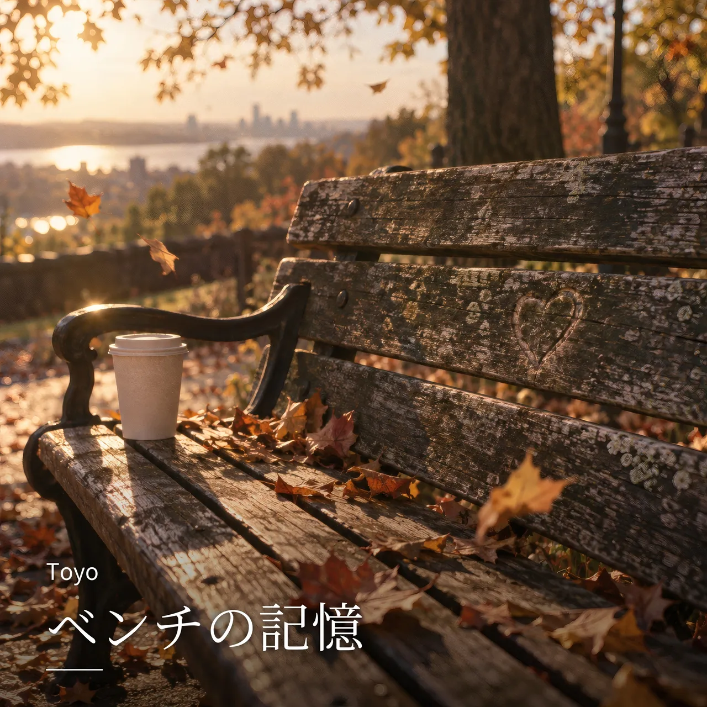

全曲 / ベンチの記憶

NEW
ベンチの記憶
Toyo · lo-fi cinematic ballad · 感情に浸りたい / 作業・集中
LYRICS
午後の風が ページをめくるように 古いベンチに 影が寄り添う 笑っていた二人の声も 今はどこかで 別の空の下 落書きのハートに 名前がにじむ 時間は優しく でも残酷で コーヒー片手に座る青年 夢を語ってたあの日の続きは ベンチの上には いろんなストーリー 誰かの涙も 誰かの始まりも 風が覚えてる 言葉にならない想い 今日もそっと 木の影に溶けていく 老夫婦が並んで見てた夕焼け 沈む太陽に 笑っていた 「長かったね」って 手を握るその瞬間 世界は優しさで満たされた 隣の席に残るタバコの灰 焦げた木目が 誰かの跡 言葉もなくていい ここには全部ある “生きてきた証”が 静かに残る 通り過ぎる人たちは気づかない でもこのベンチは全部見てきた 出会いも別れも 夢も嘘も 全部 この街の音楽みたいだ ベンチの上には いろんなストーリー 笑い声も ため息も 置いていく 誰も知らない 祈りがあったこと 風だけが それを知っている 夜になれば 街灯の下で また誰かが 一人座るだろう この場所はきっと 時の中のページ 名前のない物語を 今日も綴っている
NEXT
次に聴くなら


FOLLOW
新曲を、いちばん早く。
Spotify でフォローすると、新曲が「Release Radar」に自動で届きます。